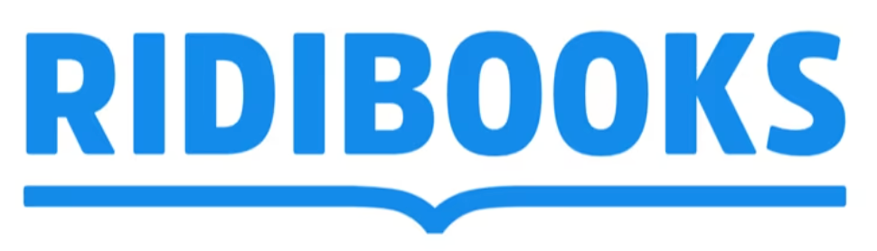
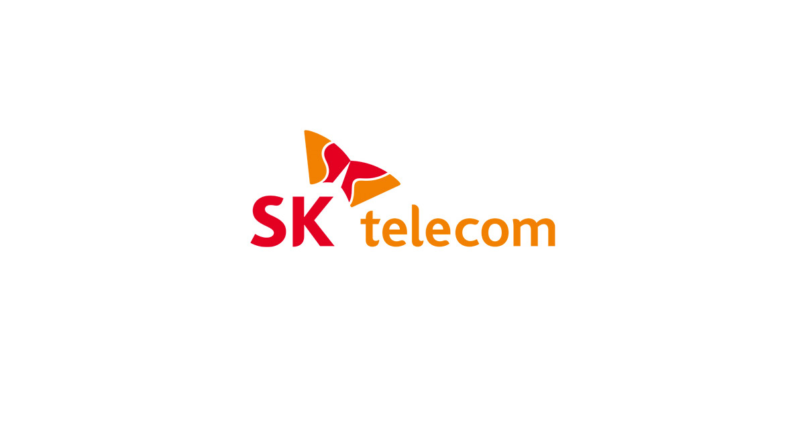

Proby는 AI 인터뷰 기반 정성 리서치로 더 빠르고, 더 깊은 사용자 인사이트를 제공합니다.
AI 인터뷰 체험하기


진행 인터뷰
케이스 스터디
AI 유사도 평균 (10점 만점)
재참여 의향
Our Mission
Proby는 AI와의 1:1 대화형 인터뷰를 통해 설문지로는 닿지 못하는 사용자의 진짜 생각을 꺼냅니다. 압박 없이 솔직하게, 시간과 장소에 구애받지 않고 — 더 자연스럽게 더 깊이.
최신 AI로 대규모 인터뷰 데이터를 빠르게 분석하고 패턴을 도출합니다.
실제 경험과 니즈를 이해하고 실행 가능한 솔루션을 제안합니다.
정성·정량 데이터를 통합해 신뢰할 수 있는 근거를 제공합니다.
기존 대비 훨씬 짧은 시간 안에 인터뷰 설계부터 보고서까지 완성합니다.
Our Team

회사의 전략과 비전을 수립하며, AI 기반 사용자 리서치 플랫폼의 성장을 이끌어갑니다.
비즈니스 전략 수립과 파트너십 개발을 통해 회사의 사업 확장을 주도합니다.
기술 전략과 제품 개발을 총괄하며, AI 기반 리서치 플랫폼의 기술적 우수성을 확보합니다.
Our Values
모든 연구 과정과 결과를 투명하게 공유하며 신뢰할 수 있는 데이터를 제공합니다.
최신 기술과 방법론을 도입하여 더 효율적이고 정확한 리서치를 수행합니다.
인사이트를 단순한 정보가 아닌 실행 가능한 솔루션으로 전환합니다.
클라이언트와의 긴밀한 협업을 통해 최적의 결과를 만들어냅니다.
Get Started
프로젝트 문의나 협업 제안을 환영합니다. AI 인터뷰로 더 깊은 사용자 인사이트를 경험해보세요.